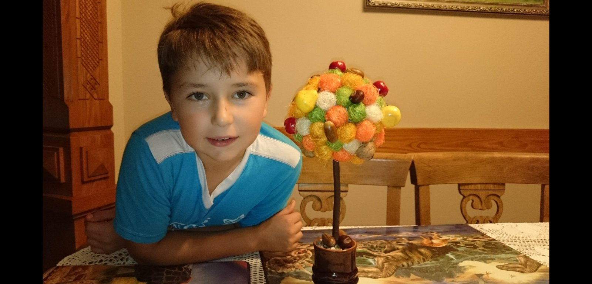
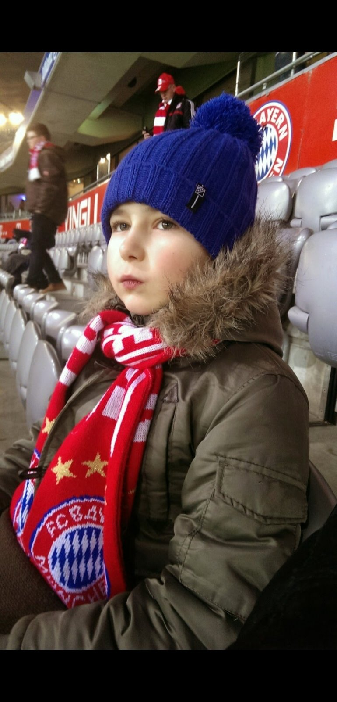
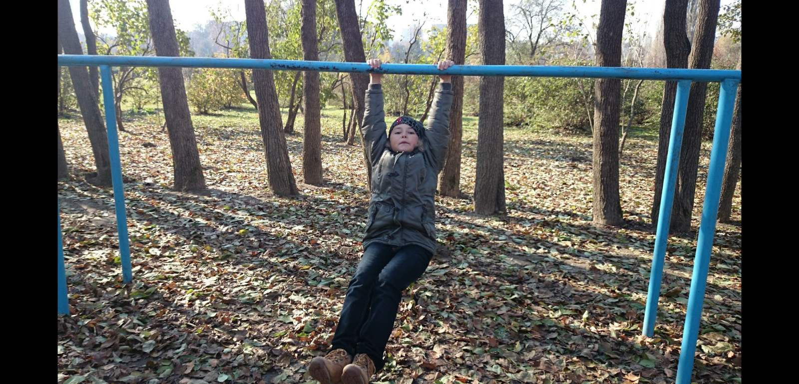

Copilaria mea:

- Din copilarie am fost un copil timid, insa intrand in discutie si acomodandu-ma cu grupul si persoanele deveneam activ si imi placea sa creez competitii din nimic:
- cine alearga mai repede?
- cine se ascunde mai bine?
- cine sare mai sus?

- Desigur ca iubeam atentia(mai mult ca acum).Ca orice copil doream atentie si uneori eram enervant si hiperactiv, parintii ma intelegeau insa strainii ma priveau ca pe un copil fara educatie.
.

Activitatile mele preferate:
- sa dorm
- sa-mi enervez parintii
- sa privesc alba ca zapada
- sa mananc biscuiti